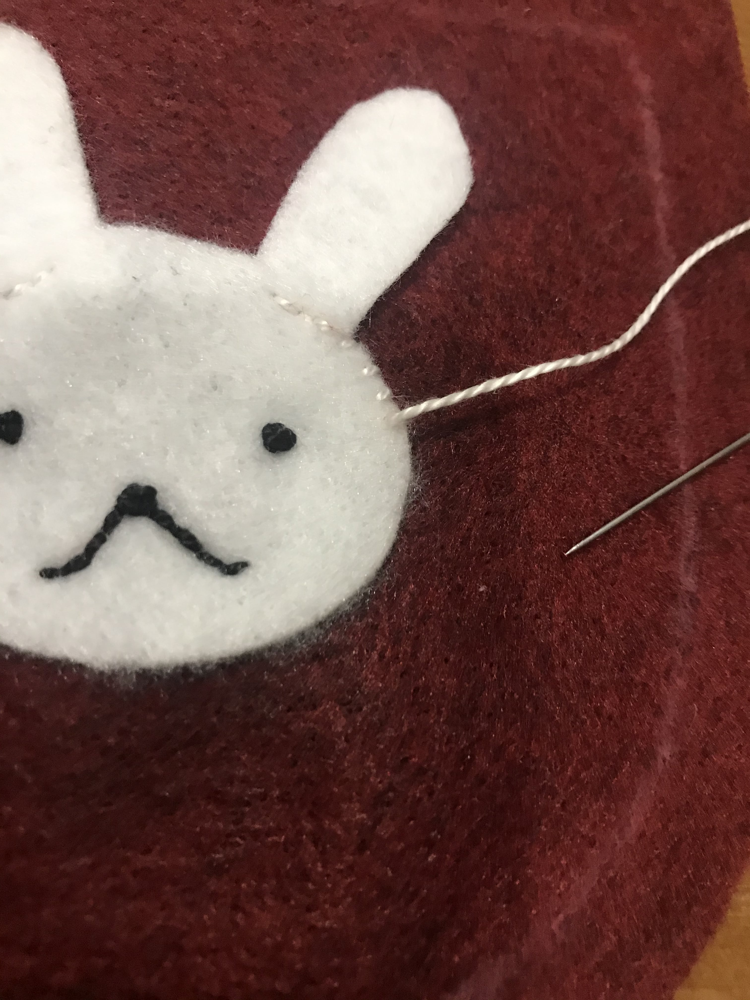
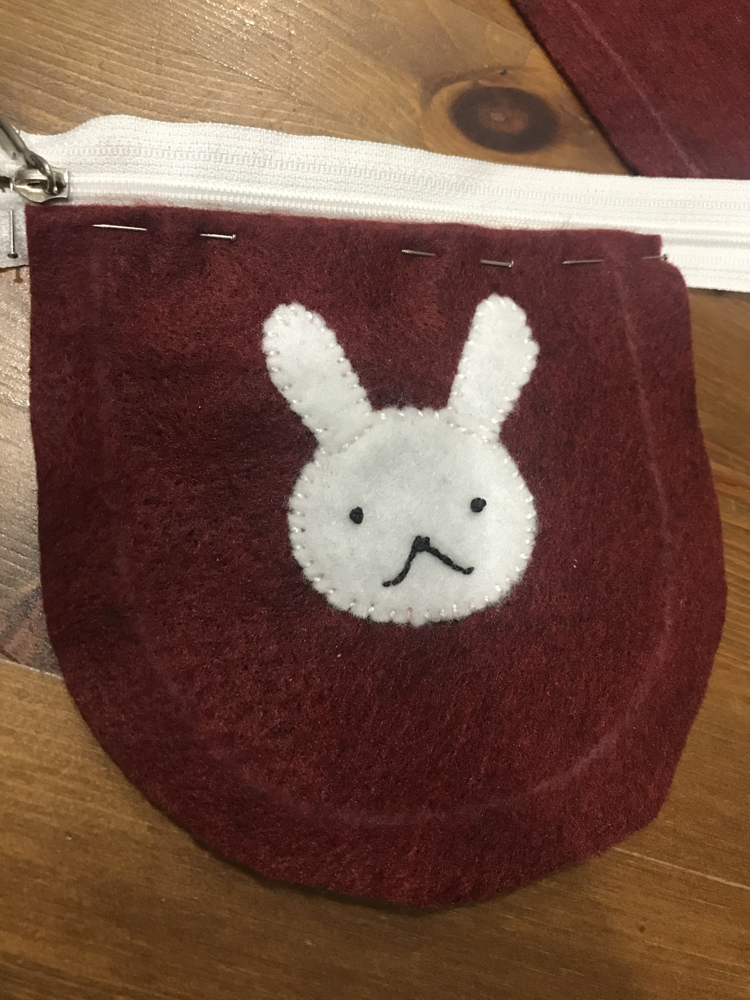
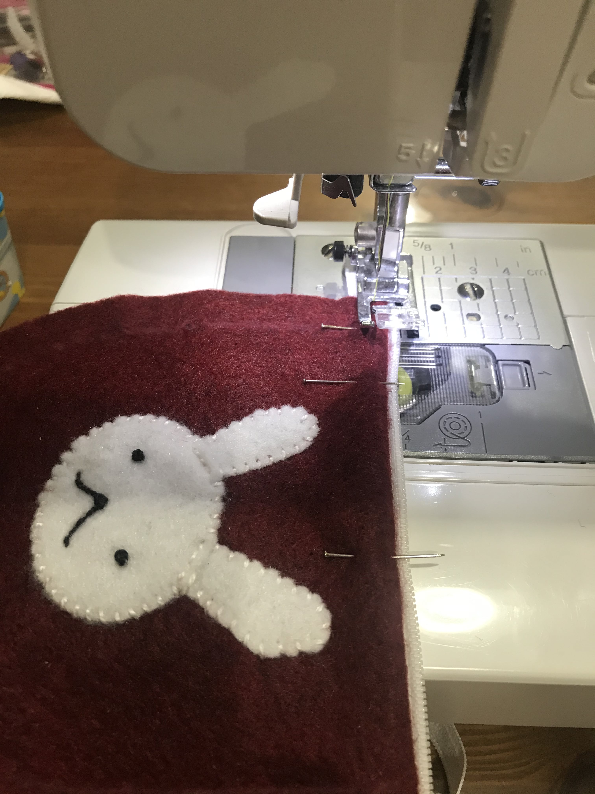
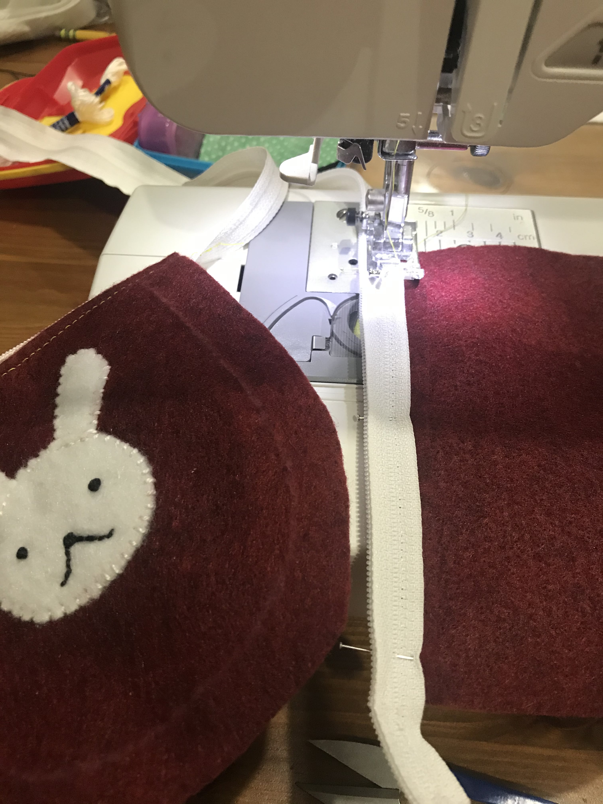
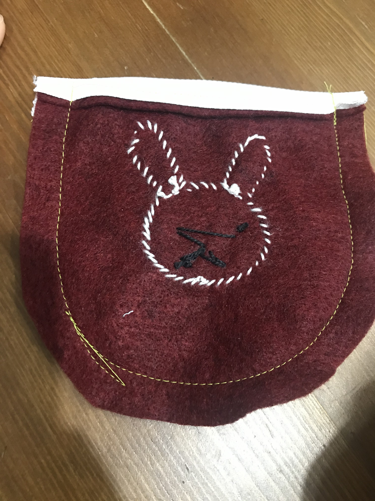
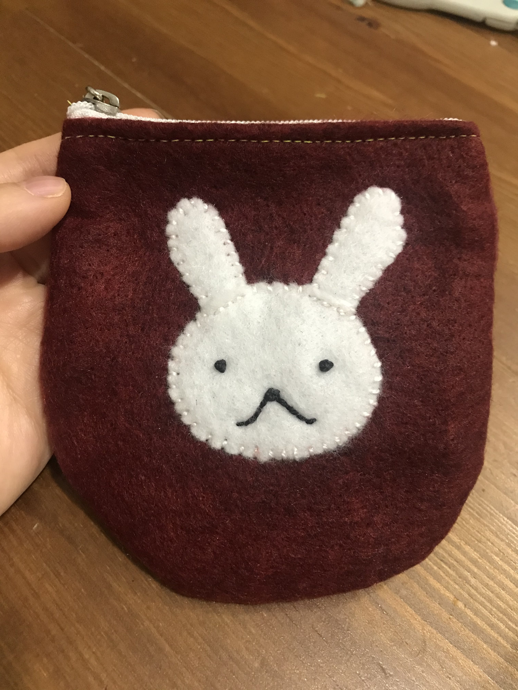
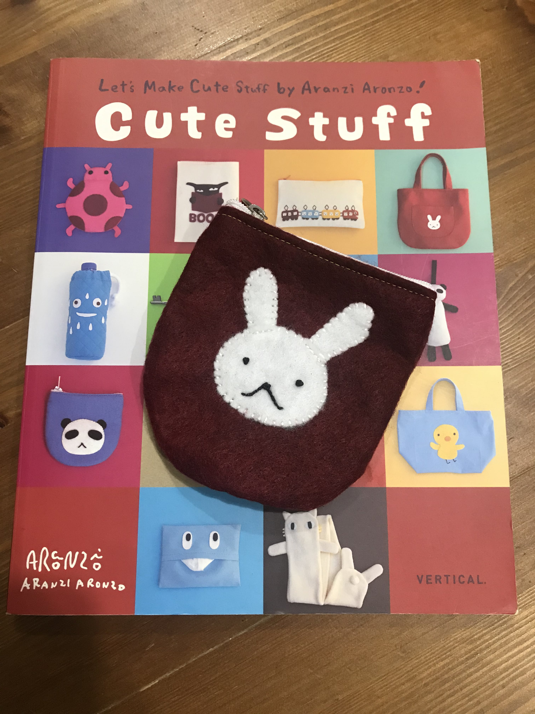

Week 12: Casting, Composites, Sewing
Coin Purse
While I was originally intending to do molding and casting this week, my SORTA-Clear silicone rubber was confiscated by TSA... So I decided to make something by sewing.
My mom is really into sewing/making things/anything crafts related, so luckily I already had all of the materials I could need! I found instructions on making a felt coin purse, so I gathered everything and got to work.
Materials:
- Felt fabric
- Clear plastic sheet (for tracing pattern)
- Pencil for tracing
- Thread and needle
- Sewing Machine
I started by tracing the patterns onto the clear plastic sheets. I then cut them out and traced them onto the felt fabric with a white charcoal pencil. I then cut out the parts - two pieces for the case and a head and two ears for the bunny. (I left about 1 cm around the case pieces) I then fixed the head onto one of the case pieces and stitched a simple face with black thread. I made the eyes and nose using a French Knot - wrap around the needle three times and insert close to the place it originally came up and slowly pull down to complete. I then placed the ears behind the head and stitched around the perimeter, leaving about 2-3mm between stitches.
   After I got the front piece finished, then came the more tricky part - attaching the zipper. I first folded back the top and fixed it to the zipper with needles. Then I put it through the sewing machine to stitch it together and repeated for the back side. Lastly, I stitched the two pieces together (working the sewing machine at the lowest speed). It was a little tricky running the coin purse through the machine since it was round, but going slowly helped.
Super easy coin purse - I used it this morning to carry my vaccine card to my second dose appointment!
  